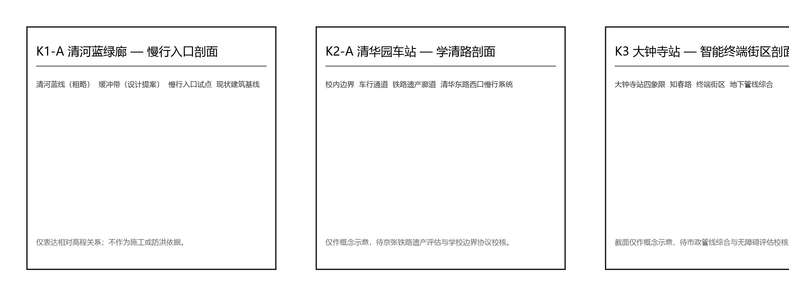

开源发布厅
仅检索授权项目元数据与公开许可证，生成可复核发布摘要。
人工复核：误署名即下架
AI 停用后 · 同一件事怎么办成固定目录、纸本登记册与人工咨询台switchback-instance-suite.json · SCN-01 · R-SERVICE-OPS
轨道文化 · AI 新基座 · 包容的未来城市 · 离线评审台
v2.0 / v2.1 两次采样 81/100 v2.2 机制深标：实例套件 + 规则注入 + 零号折返亭 + 声音 + 交互开关




默认显示智能层在线内容。拨动页面顶部开关后，每张卡只显示无 AI 等价服务：由谁承担、不依赖什么。数据源：visual/assets/governance/switchback-instance-suite.json。
仅检索授权项目元数据与公开许可证，生成可复核发布摘要。
离线沙盒运行合成或授权测试集，不连接任何生产系统。
授权任务下的端侧算力调度建议与能耗展示，不做个人画像。
只给路线建议与聚合人流计数，不采集身份或轨迹。
授权议程、多语摘要与清权索引，不生成投资或政策承诺。
辅助展示环境监测与养护提示，处置由设施人员决定。
授权成果摘要检索与服务匹配，不评价科研真实性。
只展示公开目录、合成样例与审计日志，不交易真实敏感数据。
只提供公开服务目录检索，专业结论由持证人员作出。
只做公开活动信息与多语导览，拥挤或许可变化即停用。
固定导视 + 常亮照明 + 纸面值班簿 + 人工服务台 + 物理停用按钮。不依赖任何 App、账号或网络即可完成问询、投诉与停用；位置、尺寸、材料与无障碍净宽由专业团队按现场测绘与无障碍规范确定。状态：概念建议，未选址、未建造、未运行。
空间锚点：geometry/public_space.geojson#PUBLIC-04-ZERO-SWITCHBACK-KIOSK · 服务场景：SCN-04 / SCN-10 · 指标：switchback_physical_stop_point_count = 1
| 规则 | 说明 | 基线 | 注入 | 结果 |
|---|---|---|---|---|
| R1 | node_id 必须指向真实几何要素 | 10 通过 | 10 拦截 | 0 漏过 |
| R2 | rollback_owner 必须指向真实角色 | 10 通过 | 10 拦截 | 0 漏过 |
| R3 | 无 AI 基线必须非空 | 10 通过 | 10 拦截 | 0 漏过 |
| R4 | 折返路径至少一步 | 10 通过 | 10 拦截 | 0 漏过 |
| R5 | 有条件接受必须列未决项 | 10 通过 | 10 拦截 | 0 漏过 |
| R6 | 沙盒输入禁止个人数据 | 10 通过 | 10 拦截 | 0 漏过 |
| R7 | 公共部署不得带阻塞未决项 | 10 通过 | 10 拦截 | 0 漏过 |
共 80 条检查：10 基线 + 70 注入，70 拦截、0 漏过。报告见 visual/assets/governance/switchback-rule-check-report.json。只证明规则闭合，不证明现场绩效、安全、合规或获批。
assets/media/audio-guide-zh.md · 字幕 audio-guide-zh.vtt · 机器语音合成，非真人录音，无背景音乐。
assets/media/audio-guide-en.md · captions audio-guide-en.vtt · machine voice, not a human recording.

| 任务 | 覆盖位置 |
|---|---|
| agent.1 命名与品牌 | 总体概念章节 + 品牌识别图 + 本页 |
| agent.2 全球案例与生态图谱 | 8 项全球案例表 + 要素保障 / 技术测试 / 场景开放 |
| agent.3 场景卡与画像 | 10 张场景卡 + 8 类用户画像 + 3 个测试场 + 智能层开关 |
| agent.4 公共空间与朝圣地标 | 3 个 AI 朝圣地标 + 9 个公共空间组件 + 零号折返亭 |
| agent.5 文化叙事与导视 | 三层文化并置叙事 + 国际传播三句短文 |
| agent.6 活动体系与运营 | 长期运营价值三要素 + 开发者社区 + 场景开放机制 |
38 条来源逐条登记 usable_for / not_usable_for，与中央 registry 同源条目绑定 registry_source_id；16 条假设（A-BOUNDARY-001 等）覆盖官方边界、控规、道路红线、权属、建筑实测、文保、市政、数据与运营边界。v2.2 音频与封面均为本机程序化/语音合成生成，provenance 见 sources.json 与 manifest。